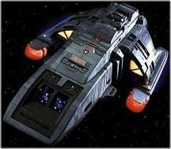

Flotta Stellare - Runabout Classe Danube |
|
|
|  |
I runabout di questa classe sono entrati in servizio attivo nel
2368 (Paradise).
| USS Gander Distrutto nel 2375 nel sistema Goralis durante un attacco Jem'Hadar. | Penumbra | Il Gander è un fiume del Canada. |
| USS Ganges NCC-72454 Assegnato a Deep Space Nine, distrutto da un incrociatore T'Lani per facilitare la fuga del personale della base. | Past Prologue, Q-Less, Vortex, Progress, The Siege, Armageddon Game | Il Ganges compare per la prima volta in
Past Prologue, in cui viene fornito di
una roll bar contenente l'apparato dei sensori. Dal punto di vista della
gestione degli effetti speciali, la roll bar serviva per distinguere il
Ganges dallo Yang-Tze Kiang. Il Gange è il fiume più lungo dell'India ed è considerato dagli Indù un fiume sacro. |
| USS Mekong NCC-72617 Rimpiazza il Ganges. Distrutto durante il disastroso attacco cardassiano e romulano al pianeta dei Fondatori. | Whispers, Playing God, The Maquis - Part II, The Jem'Hadar, Heart of Stone, The Die is Cast | Il Mekong scorre per 4.500 km percorrendo tutta l'Indocina; bagna Ventiane nel Laos, Phnom Penh in Cambogia e Ho Chi Minh in Vietnam. |
| USS Orinoco NCC-72905 Rimpiazza lo Yang-Tze Kiang. È l'unico runabout rimasto su Deep Space Nine stazione quando questa è stata colpita da una violenta tempesta di plasma. Distrutto nel 2374 da alcuni attivisti del movimento Vera Via. | The Siege, Invasive Procedures, Melora, Shadowplay, Paradise, Shadowplay The Maquis - Part II, The Jem'Hadar, Our Man Bashir | L'Orinoco è un fiume venezuelano lungo oltre 2.500 chilometri. |
| USS Rio Grande NCC-72452 Assegnato a Deep Space Nine. Utilizzato da O'Brien e Dax per recuperare Sisko, Kira e Bashir da una luna del quadrante Gamma. | Emissary, Vortex, Battle Lines, The Homecoming, The Siege, Melora, Armageddon Game, Whispers, Playing God, The Maquis - Part II, The Jem'Hadar, Improbable Cause | Il Rio Grande segna il confine tra Stati Uniti e Messico ed è lungo
oltre 3.000 chilometri. 47: nel numero della nave c'è un 4 seguito da (5 + 2). |
| USS Rubicon NCC-72936 Rimpiazza il Mekong. Nel 2374 questa nave è stata interessata da una compressione subspaziale. | Family Business, One Little Ship | Il Rubicone è il fiume italiano che delimitava il confine settentrionale entro il quale le truppe non potevano marciare in armi. Cesare ha varcato questo fiume in armi nel 49 a.C. pronunciando la famosa frase «Alea jacta est» (il dado è tratto). |
| USS Shenandoah NCC-73024 In data stellare 51597.2, Worf e Jadzia Dax usano questo runabout per una missione di salvataggio di un disertore cardassiano da una base del Dominio nel pianeta Soukara; la missione fallisce. In data stellare 51825.4, il guardiamarina Nog, accompagnato da Jake Sisko, parte con questo runabout dalla base stellare 257 per consegnare un messaggio diplomatico al Grande Nagus Zek su Ferenginar. Durante il viaggio subisce un attacco da parte di una nave Jem'Hadar. L'equipaggio viene portato in salvo dalla Valiant. Il runabout è andato alla deriva o, probabilmente, è stato distrutto. | Change of Heart, Valiant | Shenandoah è il nome di una contea e di un parco nazionale della Virginia, USA. Il nome di questa contea è stato stabilito dalla popolazione locale nel 1778 e deriva dalla tribù indiana dei Senedos. Esistono varie grafie di questo nome, il cui significato è «figlia delle stelle». |
| USS Yangtzee Kiang NCC-72453 Assegnato a Deep Space Nine, distrutto in un atterraggio di emergenza su una luna nel quadrante Gamma. | Emissary, Past Prologue, Battle Lines | Lo Yangtzee Kiang (Chang Jiang), il Fiume Azzurro, è il maggiore fiume dell'Asia, lungo 5.800 km. Percorre tutta la Cina bagnando Chongqing (Yuzhou), Wuhan, Nanchino e Shangai. |
| USS Volga NCC-73196 Assegnato a Deep Space Nine. | Body Parts | Il Volga è il maggiore fiume europeo, lungo 3.500 chilometri. |
| USS Yukon NCC-74602 Assegnato a Deep Space Nine, distrutto dalla Defiant per evitare che un changeling distruggesse il sole bajoriano. | Sons of Mogh, By Inferno's Light | Lo Yukon, lungo 2897 km, nasce in Canada e sfocia in Alaska nel mare di
Bering. Il numero di registro della nave è un 47. |
| [Senza Nome] Distrutto per salvare l'Enterprise. | Timescape | |
| [Senza Nome] Trasporta O'Brien e Bashir su Bajor. | The Storyteller | |
| [Senza Nome] Con cui O'Brien e Jadzia Dax recuperano il registratore di volo della Toh'Kaht. | Dramatis Personae | |
| [Senza nome] Sisko e una squadra di ufficiali effettuano una missione di salvataggio di Kira, imprigionata su Bajor con questo runabout. | The Circle | |
| [Senza nome] Utilizzato da Bashir e Garak per recarsi su Bajor a cercare informazioni su Rugal. | Cardassians | |
| [Senza nome] Il Dottor Mora Pol, Dax e Odo conducono una ricerca nel quadrante Gamma su un pianeta che potrebbe essere il possibile luogo di origine di Odo. | The Alternate | |
| [Senza nome] Lo si vede in tre occasioni: quando O'Brien e Kira setacciano la zona in cui è avvenuta l'esplosione della Bok'Nor; quando Sisko e Dukat si recano nella colonia su Volano II; quando Sisko, Kira e Bashir si recano nelle Badlands quando inseguono la traccia di curvatura della nave su cui è prigioniero Dukat. | The Maquis - Part I | |
| [Senza nome] Utilizzato da Bashir per recarsi su Cardassia da Enabran Tain. | The Wire | |
| [Senza nome] Utilizzato da O'Brien e Keiko per la loro vacanza. | Tribunal | |
| [Senza Nome] Utilizzato da Odo per andare all'incontro con l'informatore cardassiano. | Improbable Cause | |
| [Senza Nome] Utilizzato da Odo e Garak per raggiungere Tain. | Improbable Cause | |
| [Senza Nome] Abbandonato e presumibilmente distrutto nel quadrante Gamma. | The Die is Cast | |
| [Senza Nome] Runabout su cui viaggiano Sisko e Eddington. | Blaze of Glory | |
| [Senza Nome] Alla deriva nei pressi di Empok Nor nel sistema Trivas. | Empok Nor | |
| [Senza Nome] Ha trasportato Ezri Dax a New Sydney, nel Sistema Sappora. | Prodigal Daughter | |
| [Senza Nome] Usato da Kira, Odo e Garak per recarsi da Deep Space Nine a Vanden Prime, il pianeta su cui è nascosto il quartier generale della resistenza cardassiana. | When it Rains... |